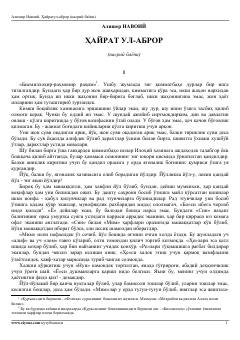

ANAlisher Navoiyning "Hayratul-abror" dostonining mazmunga boy nasriy bayoni.
Ushbu kitob buyuk o'zbek shoiri va mutafakkiri Alisher Navoiyning "Xamsa" dostonining birinchi qismi bo'lgan "Hayratul-abror" dostonining nasriy bayonidir. Asarda axloqiy, falsafiy va tasavvufiy g'oyalar chuqur ochib berilgan bo'lib, insonning ma'naviy kamoloti va ilohiy haqiqatni anglash yo'llari haqida hikoya qilinadi. Kitob mumtoz adabiyotimizni o'rganish va uning mazmunini tushunish uchun qulay nasriy shaklda taqdim etilgan.